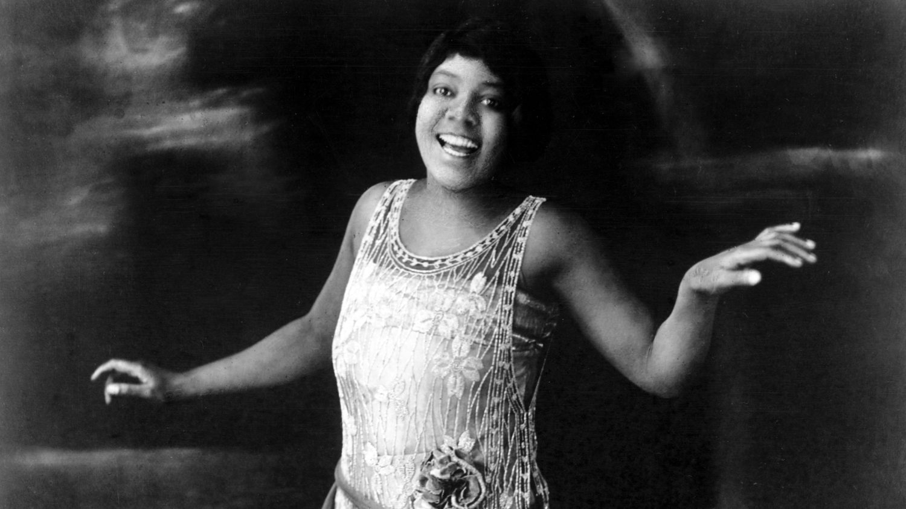

MUS 302 · What to Listen for in Music
Module 2: African American Foundational Traditions · Listening Guide · Track 1 of 5
Track 1 Bessie Smith with Louis Armstrong, "St. Louis Blues" (1925)

Context
Smith before the song: Chattanooga, vaudeville, and the rise of classic blues
Bessie Smith was born in Chattanooga, Tennessee in 1894, the youngest of seven children of a part-time preacher who died when she was an infant. Her mother and two of her brothers were dead by the time she was nine. She and her younger brother Andrew began singing and playing on the streets of Chattanooga's Ninth Street, the city's Black music and dance corridor, for whatever coins passers-by would throw down. Her older brother Clarence joined a traveling minstrel troupe called the Moses Stokes Company, and in 1912, when Smith was about seventeen, he arranged an audition for her with the troupe's managers. She was hired as a dancer, not a singer, because the company already had a singer: , the artist who would later be called the Mother of the .
What exactly Rainey taught Smith is disputed. The popular legend that Rainey kidnapped Smith and forced her to sing the blues is, as the Smith biographer Chris Albertson established, a fiction. What Smith and Rainey did share, in the few months they toured together, was the world of and tent shows, a punishing live circuit that crisscrossed the South and East Coast performing for Black audiences in segregated theaters and big-top revivals. By the early 1920s, the most prominent of those theaters were on the circuit, known to its performers as TOBA, an acronym they sometimes glossed (with affectionate exhaustion) as Tough On Black Asses. Smith built her reputation in those rooms over a decade. She made her home base the 81 Theatre in Atlanta and toured up and down the East Coast, eventually fronting her own show.
When Mamie Smith (no relation) recorded "Crazy Blues" for Okeh Records in 1920 and the record sold over a hundred thousand copies, the recording industry abruptly understood that Black audiences would buy records by Black women singing the blues. The category that Bessie Smith would lead, what scholars now call , was on the way. In 1923, after several other labels had passed on her, Smith signed with and recorded "Down Hearted Blues," written by Alberta Hunter and Lovie Austin. It sold around 800,000 copies in its first six months, and it pulled Columbia, by some accounts, out of near-bankruptcy. Smith was suddenly the highest-paid Black entertainer in the United States. By the time she recorded "St. Louis Blues" in January 1925, she was being billed as the , traveling between dates in a custom Pullman railroad car, and earning a weekly salary that peaked around two thousand dollars. The cultural anthropologist Maureen Mahon, writing in NPR's "Turning the Tables" series, has called Smith "the first African American superstar."
What Smith sang, in her ten years on record, was the world she came up in. The lyrics of her songs concerned poverty, love and infidelity, jail, drink, work, sex, the indifference of men, the cruelty of bosses, the pleasures and exhaustions of being a woman who took her own pleasures seriously. The political theorist Angela Davis has argued, in Blues Legacies and Black Feminism, that the classic blues women of the 1920s "comprised an important elaboration of black working-class social consciousness" and "foreshadowed a brand of protest that refused to privilege racism over sexism." Bessie Smith, in this argument, did political work that did not look like political work, by taking the lives of Black working-class women seriously enough to sing about them at a time when American mass culture either did not see those lives at all or saw them only through caricature.
The song before the singer: W.C. Handy, 1914, and a tango on Beale Street
"St. Louis Blues" is not Bessie Smith's song in the sense of authorship. It was written, eleven years before she recorded it, by William Christopher Handy, a Black bandleader and music publisher who would come to be called, in the title of his own 1941 autobiography, the . Handy did not invent the blues, which had been alive in Black Southern communities for decades before he heard it. What Handy did was put the blues onto , in published, copyrighted form, at a moment when sheet music was the main way popular music traveled. His earlier composition "Memphis Blues" (1912) had been one of the first published blues. He had sold its rights for fifty dollars and watched other people get rich off it. For "St. Louis Blues" (published in September 1914) he kept the rights, founded his own publishing company with the businessman Harry Pace, and made the song into one of the most widely recorded compositions of the twentieth century.
The song's structure is unusual. Most blues that Handy heard in the field, and most blues that would be recorded after his, used a single repeating form: a twelve-bar pattern of chords, a three-line lyric where the first line is sung twice, the same shape coming around and around. "St. Louis Blues" has that form (twice, in two of its three sections), but it also has, between them, a sixteen-bar middle section in a completely different and with a darker, -inflected feel. That middle section is what Handy called a , drawn from the rhythmic pattern he had encountered when he traveled to Cuba with a minstrel troupe in 1900. Habanera is the syncopated dance rhythm that Bizet had used in his opera , the rhythm that the New Orleans pianist Jelly Roll Morton would later call the of . Handy's reasons for putting it inside a blues song were practical and explicit: when "St. Louis Blues" was new, the tango was the dance craze of New York and Paris, and the song needed something for tango dancers to do. Handy described it later as a deliberate trick. "When 'St. Louis Blues' was written," he wrote in his autobiography, "the tango was in vogue. I tricked the dancers by arranging a tango introduction, breaking abruptly into a low-down blues."
The song became one of the most recorded compositions in American music. Within a few years of its publication it was being played by white dance bands across the country, sung by both Black and white singers on the vaudeville circuit, and adapted to almost every available popular format. By 1925, when Smith took it into a Columbia recording studio in New York, "St. Louis Blues" was already, as the jazz writer Thomas Cunniffe has put it, "a classic of the repertoire." What Smith did with the song was something different from what eleven years of dance bands had done with it. She slowed it down to a near-funeral tempo, stripped the band down to two other instruments, and put the song's grief on the surface where you could not miss it.
The recording: Columbia, January 14, 1925
The session took place at Columbia's New York studio on January 14, 1925. Smith was thirty. The studio was still using , the pre-electrical method in which the musicians played and sang directly into a large horn that funneled sound waves to a needle cutting a wax master. There were no microphones. Singers needed to project across a room without amplification, and Smith was famous for being able to fill a thousand-seat theater without one. The acoustic horn flattered her. Columbia would adopt electrical recording later that same year. Smith's earliest recordings, including this one, were among the last great acoustic vocal sides.
The other two musicians in the room were , twenty-three years old, on , and Fred Longshaw, Smith's regular pianist, on (also called a pump organ, a small reed organ powered by foot-pumped bellows, common in rural churches but rarely used on commercial recordings). Armstrong had moved to New York from Chicago a few months earlier to play with Fletcher Henderson's orchestra at the Roseland Ballroom. He had not yet recorded the Hot Five sides that would make him jazz's first major soloist. He was already, on this session, the most rhythmically inventive player in American music. The session produced five sides; "St. Louis Blues" was the second cut. Smith and Armstrong would record together only once more, four months later, before Armstrong returned to Chicago. The pairing of Smith's voice with Armstrong's cornet, on the small handful of sides they made together in 1925, has been called by jazz writers more or less unanimously a once-in-a-generation match.
Longshaw's harmonium is the choice that gives this recording its distinctive sound. The instrument was old-fashioned in 1925, even rural-old-fashioned, the kind of organ a small Black country church might have for hymn-singing. Longshaw was Smith's regular pianist and played piano on three of the five sides recorded that day, but for the first two ("St. Louis Blues" and "Reckless Blues") he sat at the harmonium instead. The choice was almost certainly Smith's, or made in conversation with her, and it places the recording in a specific sonic world: the harmonium ties the secular sorrow of the blues to the sacred harmonies of the Black country church, decades before would consciously fuse those traditions into music.
Reception, death, and afterlife
"St. Louis Blues" was released by Columbia in March 1925. It sold strongly, by the standards of the market the framing reading describes, and along with "Down Hearted Blues" and several other Smith hits, it kept Columbia's books in order through the mid-twenties. Smith continued to record for Columbia until 1933. The Great Depression, the rise of radio, and changing musical tastes (the swing era was about to arrive) collapsed the market for the kind of recorded blues she had built her career on, and her last session was in 1933.
Smith died on the morning of September 26, 1937, on a stretch of U.S. Highway 61 outside Clarksdale, Mississippi, after the car driven by her companion Richard Morgan struck the back of a slow-moving truck. She was forty-three. The persistent legend that she was refused care at a white hospital and bled to death has been investigated and disproved by Albertson and other biographers, but the fact of her death on a segregated highway in the middle of the night, far from any reliable medical care, is real, and is part of how Black America remembered her. Her funeral in Philadelphia drew somewhere between five thousand and ten thousand mourners. She was buried in an unmarked grave in Sharon Hill, Pennsylvania. In 1970, the rock singer Janis Joplin (who had named Smith as one of her central influences) and Juanita Green (who as a child had cleaned Smith's Philadelphia house) split the cost of a headstone. It reads "The Greatest Blues Singer in the World Will Never Stop Singing."
The 1925 recording entered the Grammy Hall of Fame in 1993. Mahon, in the NPR essay quoted earlier, has traced the lineage that runs from Smith's recordings forward through the Memphis-touring blues shouter (who in the 1940s sometimes performed under the billing "Bessie Smith's Younger Sister"), through Thornton to Joplin and to Elvis Presley, and outward into nearly every American popular vocal idiom that came after. named Smith as a foundational influence; so did Mahalia Jackson, , and dozens of others. Smith was inducted into the Rock and Roll Hall of Fame in 1989. The throughline this module follows, blues to gospel to to , runs out of the studio where Smith, Armstrong, and Longshaw made this recording.
Things to listen for
The recording sounds in the of E-flat as transferred on most modern reissues, though Handy's published score is in G major; acoustic-era 78s often drift in pitch by as much as a half step depending on the exact speed of the original master and the speed of any later transfer, so the sounding key of any given digital release of this track varies slightly from another. The is 4/4, four per , with the steady habanera pattern in the bridge laid over that same four-beat pulse rather than replacing it. The is around 70 , slow enough that you could walk to it without rushing. The full runtime is 3 minutes 11 seconds. Bear in mind throughout that there are only three musicians in the room.
First, the timbre of Smith's voice. It is a deep , low for a woman, and dark in color, with what writers at the time called "weight." Smith trained in rooms without microphones, and you can hear that training in the recording: she does not lean into the horn, she fills the room and lets the horn catch what it can. Her diction is unusually clear for a 1925 recording. Every consonant lands. The first verse is almost spoken in places ("I hate to see / that evening sun go down"), with Smith treating the phrasing the way an actor treats a monologue: words placed deliberately, with space around them, occasionally downward into the next pitch by a sliding scoop. Compare this to the way Sam Cooke uses in "A Change Is Gonna Come", where a single syllable spreads across four or five notes. Smith does not do that here. She holds notes long, but she stays on the note. The expressive work is happening in the slides between notes, not on top of them. The grain in her voice is constant: not turned on for emphasis, the way Cooke turns his on, but always present, the basic color of the instrument.
Second, the texture, which is the thinnest of any recording in this listening guide. Three sound sources: voice, cornet, harmonium. The harmonium plays a steady, slow-moving pad of chords underneath everything, occasionally taking a short fill but mostly providing the harmonic floor. The cornet plays an line, the term jazz writers use for an improvised commenting voice that weaves around a singer's vocal line, answering her phrases when she pauses, holding back when she sings. The voice is the third element. There is no . There is no piano (Longshaw is at the harmonium for this side, not the piano). There is no bass. There are no drums. Compare this with the eleven violins, two French horns, and full rhythm section behind Cooke, the twelve-piece ensemble behind Cruz, the six-piece Chess behind DeSanto, even the five-piece backing band behind Williams. Smith has Armstrong and Longshaw. Three voices total. The recording is what arrangers call "deep," meaning the sound has so few layers that each one is fully audible at all times. Listen to how this affects what you can hear of Smith's vocal: the small breath she takes before the second line of each verse, the way her voice settles into and out of a note. None of that survives a busy arrangement. The thin texture is what lets it through.
Third, the form. The lyric structure for the verses is what blues scholars call : three lines per verse, the first line repeated, then a third line that completes the thought. "I hate to see that evening sun go down / I hate to see that evening sun go down / It makes me think I'm on my last go round." That AAB lyric sits on top of the chord progression the framing reading introduced. But the song does not stay in twelve-bar blues throughout. After two verses in that form, Smith and Armstrong move into the sixteen-measure tango bridge ("Saint Louis woman, with her diamond rings"), shifting into the darker, minor-inflected sound the habanera bass figure produces under blue-note vocal lines. After the bridge, the song returns to the twelve-bar blues for the final verses. The overall shape, sometimes called AABA in the simplified form jazz musicians use to discuss it, is closer to the multi-strain shape of compositions than to a folk blues. The framing reading argued that "St. Louis Blues" anchors a tradition. Hearing the form clarifies in what sense: this is not the simplest blues, but a composed song that uses the blues as one of its building blocks, alongside something else. The Cuban habanera coming through the song's bridge is one of the earliest moments on record where what this course calls American popular music is also already, audibly, a music of the Americas plural.
Fourth, Armstrong's cornet as second voice. Pay attention to what Armstrong does in the spaces between Smith's vocal phrases. He plays a quiet, mostly muted line that comments on what she has just sung, sometimes paraphrasing her melody, sometimes answering it with a contrasting figure, sometimes pushing against it. The relationship between voice and horn is a textbook example of , the same principle that organizes Cruz's salsa , gospel preaching, and the fills behind Williams. Smith calls. Armstrong responds. The conversational structure that organizes much of Black popular music is here, on a 1925 record, with two of the era's greatest performers using it explicitly. Listen also for what Armstrong does during Smith's vocal lines. He does not stay silent, but he plays so quietly that he moves to the edge of the recording, leaving the foreground to her. When Smith pauses for breath or for emphasis, Armstrong fills the silence. When she sings, he steps back. Two musicians of comparable ego, sharing a microphoneless room, agreeing without rehearsal who has the floor at any given moment. That is part of what jazz writers mean when they call this a once-in-a-generation match.
Reflective question
The framing reading described Handy as someone who put the blues onto sheet music at a moment when the blues was already alive in Black Southern communities. T-Bone Walker, the great Texas blues guitarist, said about "St. Louis Blues" in the 1960s, "You can't dress up the blues. I'm not saying that 'Saint Louis Blues' isn't fine music, you understand. But it just isn't blues." Bessie Smith, in this recording, is performing a song written by a music publisher, with a Cuban dance rhythm in the middle of it, accompanied by a cornet player who would shortly become jazz's first major soloist. Walker, listening to a song like this in 1965, did not hear blues. What do you hear? What does Smith's performance of this song add (or subtract, or change) that complicates Walker's claim? And what is at stake in defining what counts, and what does not count, as the blues?
Sources for this section
Albertson, Chris. Bessie. Yale University Press, 2003 (revised edition). The standard biography, drawing on extensive interviews with Smith's family and surviving collaborators, including the conversations that disproved several of the most persistent myths about her life.
Davis, Angela Y. Blues Legacies and Black Feminism: Gertrude "Ma" Rainey, Bessie Smith, and Billie Holiday. Pantheon, 1998. Reads the classic blues women as Black feminist intellectuals whose recordings articulated a working-class consciousness that mainstream American culture refused to see.
Handy, W.C. Father of the Blues: An Autobiography. Macmillan, 1941. Source of the famous tango-on-the-dance-floor anecdote about the writing and first performance of "St. Louis Blues."
Mahon, Maureen. "How Bessie Smith Influenced A Century Of Popular Music." NPR, "Turning the Tables" series, August 5, 2019. (Mahon is associate professor of music at NYU and the author of Black Diamond Queens: African American Women and Rock and Roll, Duke University Press, 2020.)
Cunniffe, Thomas. "48 Versions of 'St. Louis Blues.'" Jazz History Online, 2003 (updated 2019). Detailed comparative listening analysis of the 1925 Smith/Armstrong recording alongside several dozen later versions.
Ruhlmann, William. "Behind the Song: Bessie Smith, 'St. Louis Blues.'" American Songwriter, July 31, 2015. Useful on the song's pre-Smith publishing history and its journey from Handy's pen to her studio.
The Blues Foundation. "'The St. Louis Blues': Bessie Smith (Columbia, 1925)." Hall of Fame inductee entry. Source for the personnel and instrumentation of the 1925 session.
Wikipedia. "Saint Louis Blues (song)." Heavily sourced article on the song's composition, structure (12-bar blues plus 16-bar habanera bridge), and recording history; useful for cross-checking dates.
Schuller, Gunther. Early Jazz: Its Roots and Musical Development. Oxford University Press, 1968. Source for the assessment of Smith as "the first complete jazz singer" and for analytical work on the Smith/Armstrong sides.